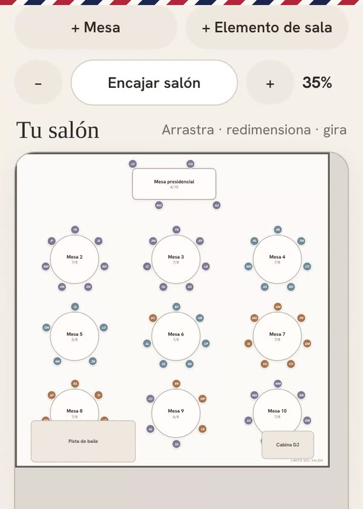

Cómo hacer el plano de mesas de la boda, paso a paso
El plano de mesas tiene fama de ser la parte más temida de organizar una boda. No tiene por qué. Con la lista bien hecha y un orden claro, se resuelve en un par de tardes.
Antes de empezar
Pedid al sitio de la celebración tres datos: cuántas mesas caben, de qué forma son (redondas, rectangulares, imperiales) y cuántas personas entran en cada una. Con eso ya sabéis cuántos huecos tenéis que llenar.
No esperéis a tener todas las confirmaciones para empezar. Haced un plano provisional con quien ya ha dicho que sí y dejad huecos. Moverlo después es mucho más fácil que partir de cero a dos semanas de la boda.
Agrupad a los invitados
El truco está en dejar de pensar en personas sueltas y pensar en grupos: familia de ella, familia de él, amigos del colegio, compañeros de trabajo, amigos de la universidad. Cada grupo suele ocupar una o dos mesas.
- Las parejas y familias van siempre juntas.
- Los niños: o con sus padres, o en una mesa de niños cerca de ellos si hay varios de edades parecidas.
- Los invitados que no conocen a nadie funcionan mejor en una mesa con gente de su edad o de intereses parecidos que en un hueco libre al azar.

La mesa presidencial
Hay tres opciones habituales, y ninguna es mejor que otra:
- Clásica: los novios con padres y padrinos.
- Solo los novios, o una mesa pequeña para los dos. Evita decidir a quién sentar en una familia con situaciones delicadas.
- Con amigos: los novios con sus amigos más cercanos, y los padres presiden cada uno una mesa de su familia.
Si hay padres separados o relaciones complicadas, la segunda y la tercera opción os ahorran más de un disgusto.
El reparto, de lo fácil a lo difícil
- Colocad primero los grupos que llenan una mesa entera. Son los fáciles.
- Después, los grupos medianos, combinando dos que encajen (por ejemplo, amigos del trabajo de los dos).
- Por último, los invitados sueltos, buscándoles el mejor hueco.
- Revisad la colocación en el salón: las personas mayores, lejos de los altavoces y cerca del baño y de la salida; los amigos con ganas de fiesta, cerca de la pista.
Si os atascáis con una mesa, dejadla y seguid con las demás. Al final suele resolverse sola con los huecos que quedan.
Lo que necesita el catering
Cuando el plano esté cerrado, el catering os pedirá un listado. Lo que suelen necesitar es:
- El número de cada mesa o su nombre y quién se sienta en ella.
- El menú de cada invitado (adulto, infantil, vegetariano…).
- Las alergias e intolerancias, indicando en qué mesa está cada persona para que el camarero sepa a quién servir qué.
- Los niños y las tronas, si hacen falta.
Preguntad con tiempo cuándo necesitan el número definitivo y en qué formato lo prefieren. Si las alergias se preguntan al confirmar asistencia, os ahorráis llamar a todo el mundo al final. Tenéis más ideas en la guía sobre cómo pedir la confirmación de asistencia.
Errores frecuentes
- Esperar a tener el cien por cien de respuestas para empezar.
- Rellenar huecos con quien sea solo para cuadrar números.
- Hacer el plano uno solo y enseñárselo al otro al final.
- Tener la lista en un sitio y el plano en otro, y que no coincidan.
- Olvidar a los proveedores que comen en la boda (fotógrafo, vídeo, música) si así lo habéis acordado con ellos.